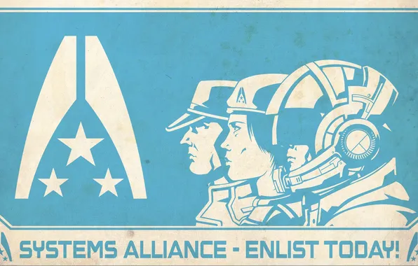
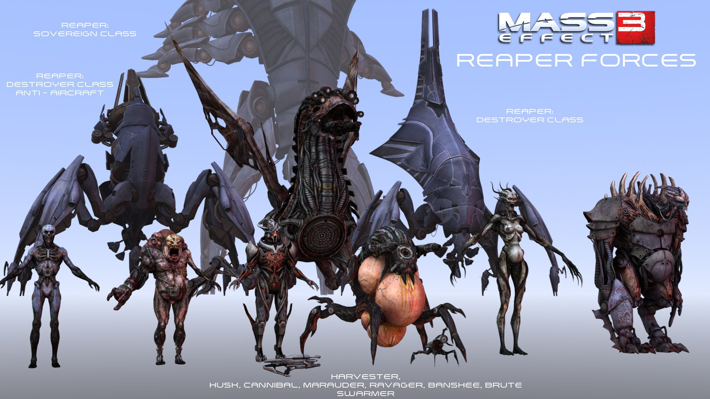

The Normandy SR-2 is a starship that serves as Commander Shepard 's base of operations following the destruction of the SSV Normandy. The Normandy SR-2 first enters service in 2185, and serves as the "successor" to the SR-1.

How do we get here
The Mass Effect galaxy is home to dozens of intelligent species, connected by ancient Mass Relays and united—however imperfectly—through the Citadel. At the heart of this civilization stands the Citadel Council, an alliance of the galaxy's most powerful races. Together they maintain order, regulate interstellar affairs, and attempt to prevent old rivalries from erupting into war. Yet beneath this fragile peace lies a galaxy full of political tensions, forgotten civilizations, and threats that could endanger every species alike.
The Reapers are ancient machines of unimaginable size and power, older than any civilization in the galaxy. Every fifty thousand years, they return from the darkness between the stars and begin a cycle of extinction. They do not come to rule the galaxy. They come to harvest it. Advanced civilizations are systematically destroyed, their populations transformed into new Reaper machines, and their knowledge absorbed into the Reapers' collective existence. Then the machines disappear again, leaving the galaxy to rebuild in ignorance—until the cycle begins anew. To the civilizations of the current age, the Reapers are more than an enemy. They are the reason entire civilizations have vanished from history, over and over again, for millions of years. And the most terrifying part is this: the Reapers don't see themselves as monsters. They believe they are carrying out a necessary purpose—preserving life by destroying it.

The Reapers rarely fight alone. Wherever they go, they bring armies made from the civilizations they have conquered. Some are machines. Others were once ordinary people—soldiers, civilians, entire species—twisted and rebuilt into living weapons. The Reapers strip away their individuality and turn them against their own kind. The smallest of these creatures are the Husks: former people transformed into mindless soldiers. Larger and more specialized horrors serve as battlefield commanders, shock troops, and biological weapons. Even entire species can be altered to serve the Reapers’ purposes. They are not independent allies. They are extensions of the Reapers themselves—a reminder that when the Reapers arrive, they don't simply destroy civilizations. They turn those civilizations into weapons against themselves.